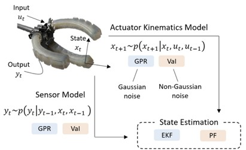
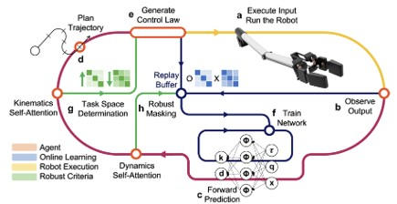
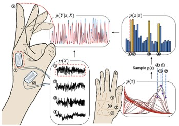
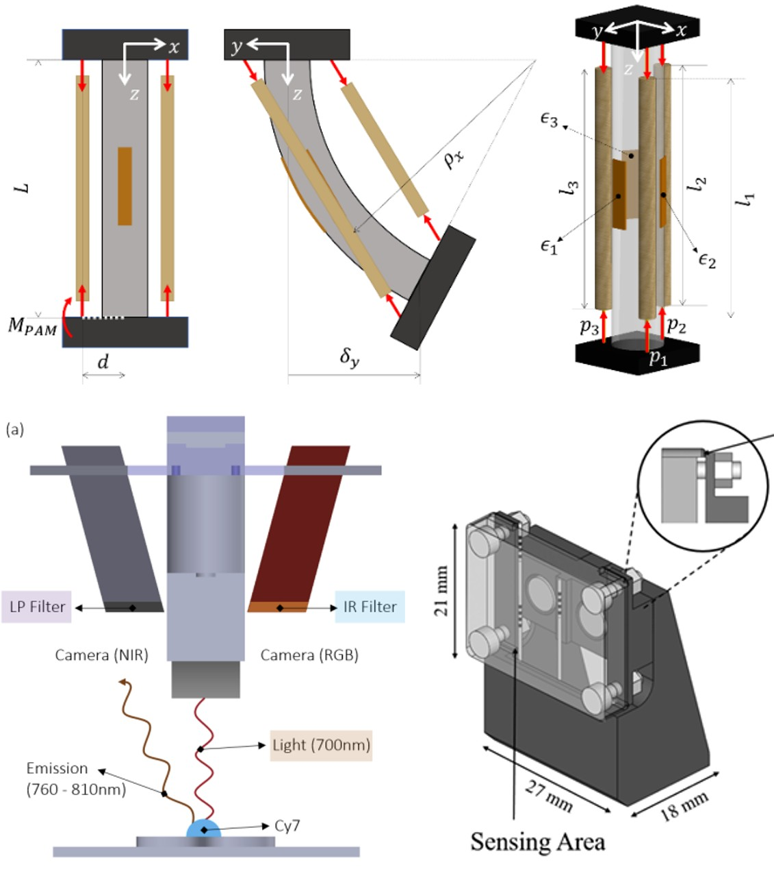

Physical Intelligent Robotics Laboratory(PIRoL)은 실사용 가능한 일반성을 목표로, 로봇 추정·제어, 통계적 데이터 기반 모델링, 그리고 물리 지능을 내장한 하드웨어 설계를 통합적으로 연구합니다.
아래 각 연구 주제는 대표 이미지(연구 사진, 프로토타입, 결과 그래프 등)와 간단 설명으로 구성되어 있습니다.
(1) AI-Based Estimation and Control
확률적 추정 이론과 학습기반 제어를 결합하여, 노이즈가 크거나 데이터가 제한된 환경에서도 강건한 상태 추정과 리스크 인지 제어가 가능하도록 연구합니다. 필터링/스무딩, 불확실성 전파, 안전 제어(MRAC, 검증 가능한 정책) 등을 실제 시스템에 적용합니다.



(2) Statistical Data-Driven Modeling
극히 제한된 샘플에서도 일반화가 가능한 통계적 모델을 설계하고, grey-box 구조로 물리/기구학적 지식을 내재화합니다. Gaussian Process, Bayesian Neural Network, Few-shot/Meta-learning을 활용해 불확실성 정량화와 해석 가능성을 동시에 추구합니다.


(3) Physically Intelligent Hardware
하드웨어 단계에서부터 물리적·체화 지능(Physical/Embodied Intelligence)을 설계하여 제어 부담을 줄이고 시스템 전체의 안정성·효율성을 높입니다. 센서 배치 최적화, 기구 설계, 소재/구조 설계를 통해 학습·제어와 자연스럽게 맞물리는 플랫폼을 구현합니다.
